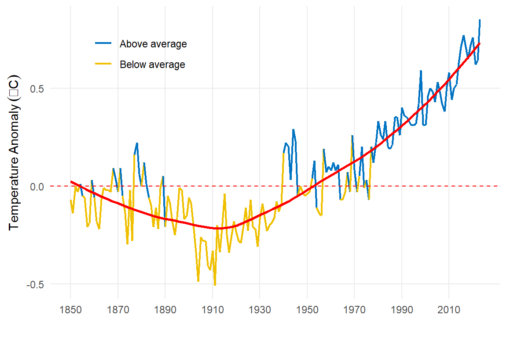
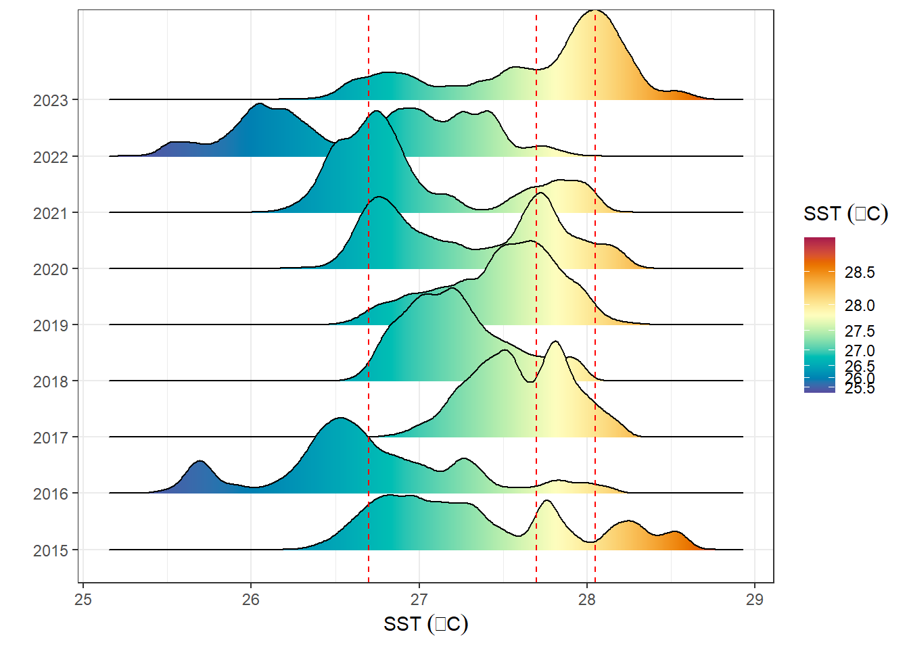
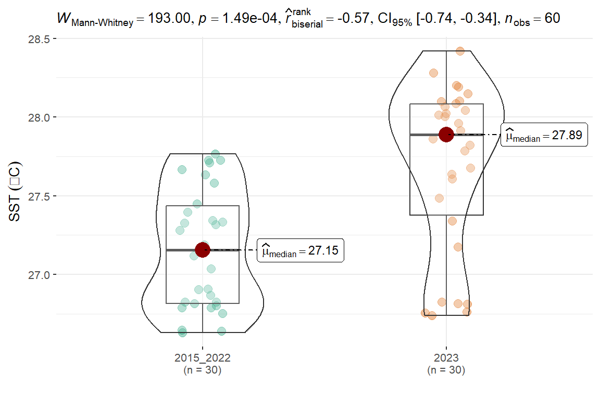
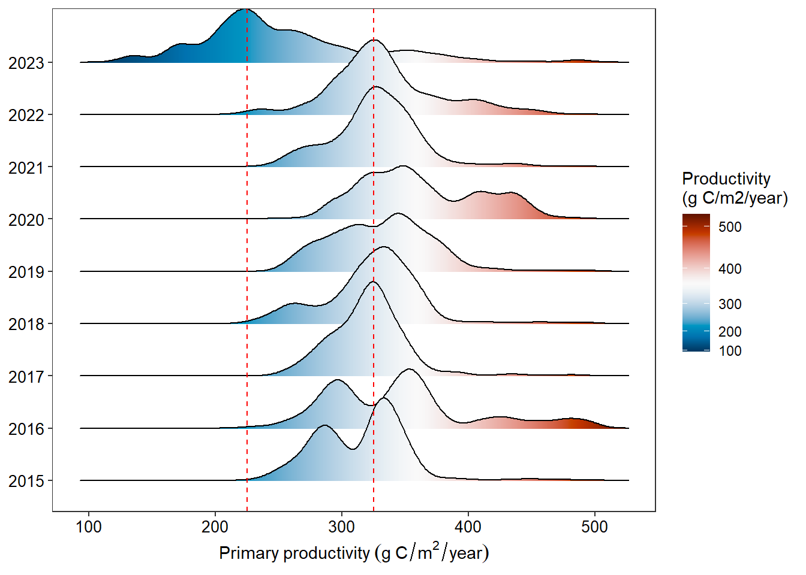
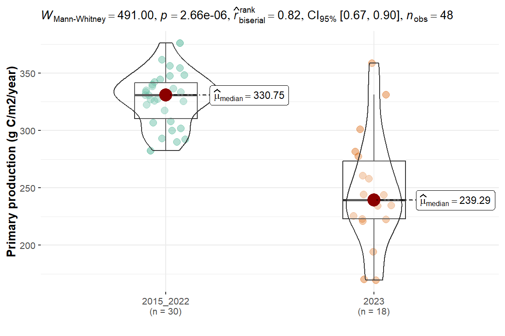

The Surpass Global Ocean Temperature Record: Implications for Ocean Productivity in Tanzania
Introduction
Global warming is a serious issue that has been affecting the planet for several decades. It is a phenomenon that has been caused by a variety of factors, both natural and man-made. One of the primary causes of global warming is the increase in greenhouse gases in the atmosphere (Pinkerton et al., 2021; Sakalli et al., 2017). These gases, such as carbon dioxide, methane, and nitrous oxide, trap heat from the sun and prevent it from escaping into space (Sakalli et al., 2017). This leads to a gradual increase in the Earth’s temperature, which is known as global warming. The main source of these gases is human activities, such as burning fossil fuels, deforestation, and industrial processes.
Over the past few days, multiple media outlets have been reporting on the global warming conditions experienced from March to June 2023. These reports indicate that June 2023 is projected to be even warmer than May 2023. According to the NOAA website, May 2023 has been recorded as the hottest May month since temperature records began in 1850. In this blog post, we will delve into the historical temperature trends from 1850 to 2023 for the month of May, followed by an exploration of the impact of rising temperatures on ocean productivity in the vicinity of Tanzania.
Before we proceed, we will load some packages, whose functions are going to be used throughout this post. These packages are highlighted in the chunk below;
Data
For this analysis, we obtained monthly global sea surface anomaly data from January 1850 to May 2023 from the NOAA website. Additionally, we collected MODIS daily sea surface data and primary productivity data from the southern part of Tanzania, specifically the Mtwara region, within the longitude range of 40.5°E to 40.7°E and latitude range of 10.4°S to 9.8°S. The data span from January 2015 to June 10, 2023. We loaded both the global and Mtwara datasets into our session using the read_csv() function from the readr package (Wickham et al., 2023). Our analysis focused solely on the month of May for the global data and June for Mtwara dataset.
Global Sea Surface Temperature (SST) Trend
The analysis reveals a decreasing trend in sea surface temperature (SST) anomaly from 1850 to 1910, with values consistently below the global average temperature indicated by a red dashed line in Figure 1. Starting from the year 1910, the global temperature anomaly for May began to rise, although still below the average global temperature. However, from the year 1975 onwards, the average global temperature anomaly for May surpassed the global mean temperature, exceeding the mean value (Figure 1). Despite some fluctuations over the years, the May temperature continued to rise, reaching its highest recorded values in May 2023 compared to previous years as shown in Figure Figure 1. This significant increase in May 2023 temperature has sparked widespread discussions worldwide regarding its impact on global biodiversity and ecosystems.

SST in Tanzania and its impact in Primary Production
Due to this alarming rise in temperature values recorded for May 2023 around the world and its potential impact on global biodiversity and ecosystems, it is imperative to delve deeper into the issue and understand its implications. In this blog post, we will specifically focus on the impact of this rising temperature on primary production in the ocean which could then affects fishery population.
Primary production refers to the process by which plants and other photosynthetic organisms convert sunlight into energy, which is then used to fuel the growth of other organisms in the ecosystem (Kim and Kim, 2021). In aquatic ecosystems, primary production is largely driven by phytoplankton, which are tiny, single-celled organisms that float near the surface of the water.
Our analysis will focus on the SST and primary productivity data from the month of June from 2015 to June 20, 2023.
Variation in SST at Mtwara
The temperature values in Mtwara between 2015 and 2022 were analyzed, and the results showed that the majority of the values fell within the range of 27 to 28 degrees Celsius, as illustrated in Figure 2. However, in 2023, the sea surface temperature (SST) recorded higher values exceeding 28 degrees Celsius. A comparison of the temperatures between 2022 and 2023 revealed that 2022 had a lower values below 28 degrees Celsius, while that of 2023 had values greater than 28.9 degrees Celsius.

We decided to divide the years into two periods: 2015-2022 and 2023. Through further analysis, we found that the average temperature during the eight-year period from 2015 to 2022 was significantly lower compared to that of the year 2023, as shown in Figure 3. Interestingly, the maximum value for the eight-year period (2015-2022) (27.15oC) was lower than the median value of the year 2023 (27.89oC), as illustrated in Figure 3. These elevated sea surface temperature (SST) values observed between May and June 2023 have sparked widespread concerns globally regarding their impacts on ecosystems.

Variation in Primary Production at Mtwara due to elevated Temperature
Now, let’s look on the variation of levels of primary production at Mtwara with this rising in the ocean temperature. The results revealed that, between the year 2015 and 2022, the amount of primary production at Mtwara for the month of June ranged between 225 and 500 g C/m2/year with many values around 325 g C/m2/year (Figure 4). Surprisingly, in the year 2023, the amount of primary production ranged between less than 100 and 400 g C/m2/year with many values recorded below 225 g C/m2/year (Figure 4). Further, the result revealed that the minimum value for the eight years period, was the same as the median of the year 2023 (Figure 4).

When further analysis was done by grouping the data into two groups (average 2015-2022 and 2023), the amount of primary production showed to be significant lower in the year 2023 compared to the average of eight years before Figure 5. While the median value in primary production for the month of June before the year 2023 was 330.75, that for the June 2023 was recorded as 239.29 g C/m2/year Figure 5.

The study results indicate that the higher temperature recorded in June 2023 is closely associated with a decline in the amount of primary production during the same month. This decline in primary production can have implications for the fish population and other aquatic organisms. Fish and other aquatic animals rely on phytoplankton, which are primary producers, as a primary food source. Therefore, the quantity of primary production in an ecosystem plays a crucial role in determining the overall fish catch.
Previous studies (Calderwood et al., 2019; Kim and Kim, 2021; Marshak and Link, 2021) have demonstrated the correlation between primary production and fish populations. Areas with high levels of primary production tend to support larger and more abundant fish populations. Conversely, in regions where primary production is low, fish populations may be smaller and less productive (Blanchard et al., 2012).
There are many other factors that can influence fish catch, including fishing pressure, habitat degradation, and climate change. Therefore, a holistic approach is needed to ensure sustainable fisheries management to our oceans.